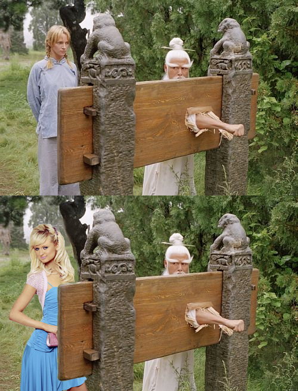

Hey,
Please Please PLEASE! can someone tell me or send me a link so that i can download ned - thanks
Please Please PLEASE! can someone tell me or send me a link so that i can download ned - thanks


 :D:D
:D:D creation of Mount Doom click here to view MY version
creation of Mount Doom click here to view MY version
 My entry is a little on the big side but hay!
My entry is a little on the big side but hay!
 - I just thought I would tell you why it is called the Doh-Bot. It was originally going to be called the Snow-Bot but the only thing "snowey" about the bot is its color. I then came up with Doh-Bot because I was watching the Simpsons and Homer Simpson said Doh!!!! Then it twigged on me that Bots are programed machanical robots and do not have a brain. Homer Simpson is so bumb that he is the next best thing to having no brain. So thats how I arrived a the Doh-Bot. sorry if I am anoying/upsetting you
- I just thought I would tell you why it is called the Doh-Bot. It was originally going to be called the Snow-Bot but the only thing "snowey" about the bot is its color. I then came up with Doh-Bot because I was watching the Simpsons and Homer Simpson said Doh!!!! Then it twigged on me that Bots are programed machanical robots and do not have a brain. Homer Simpson is so bumb that he is the next best thing to having no brain. So thats how I arrived a the Doh-Bot. sorry if I am anoying/upsetting you Im really sorry - I didn't mean to cause any upset
Im really sorry - I didn't mean to cause any upset 

 - Great idea - Im going to try and make one of Central Perk now
- Great idea - Im going to try and make one of Central Perk now 
 I shall make a pentathalon event
I shall make a pentathalon event QuoteLevel Name: Level Name Goes Here
Who Made The Level: Name of Person Who Made The Level
Event: Either Action, Puzzle, Race, Survival or Uncategorized
Link To Level: (link to level on numa)
 WOW!!! I didn't think the N-Olympics would have so much interest so quickly! - Thanks guys
WOW!!! I didn't think the N-Olympics would have so much interest so quickly! - Thanks guys ") and maybe Mother Thwumping Impossible.
and maybe Mother Thwumping Impossible.Are the maps going to be Olympic themed or just normal maps?They are going to be normal maps
 It looks like the N-Olympics is really starting to take off I don't think that I have ever had to edit a web page so many times in one day!!!!! Loads have people have signed up - This is awsome! I was also thinking of having judges so that I wouldn't have to judge all the demo's because it would take ages if I did!!!
It looks like the N-Olympics is really starting to take off I don't think that I have ever had to edit a web page so many times in one day!!!!! Loads have people have signed up - This is awsome! I was also thinking of having judges so that I wouldn't have to judge all the demo's because it would take ages if I did!!!/edit: And don't call yourself "we" on your website. It's blatant it's just you, it just sounds like you're real up yourself and using the "royal we"
(quoted from other thread)QuoteEdit:
It's a shame that nobody has nominated any levels yet. Does anyone know any levels they think would be good for the N-Olympics.For action, I'd pick B. L. T., Biggest, Longest, Fastest by Formica (I believe, I'll get a link to it soon). For race, I'd suggest Formica's The Crazy Miner or almost any of MARJINENANDRIES's maps.
Edit: I can't seem to locate B.L.T! Did TDL delete it?
I would have signed up for uncategorized but im running this contest